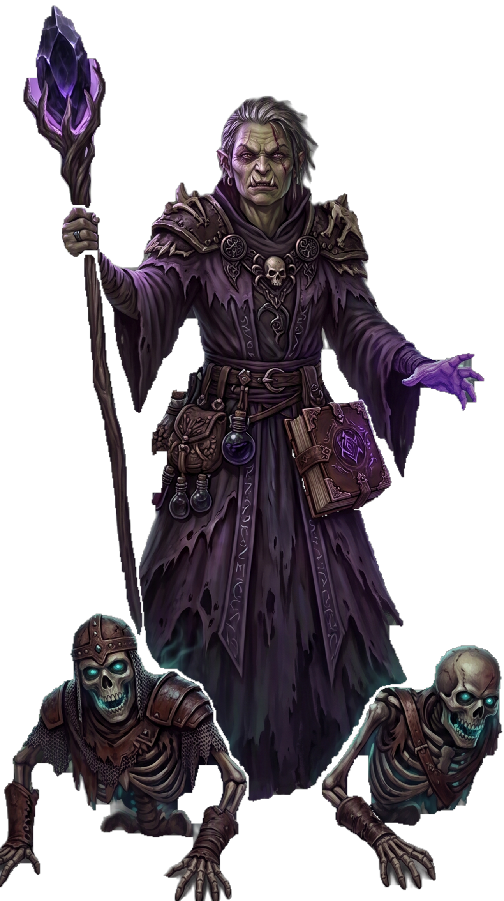

| Rolle | Vollzauberer · Schatten-Schaden · Beschwörer · Lebensraub · Kontrolle |
| Zauberertyp | Vollzauberer Zauberslots bis Rang 9 |
| Primärer Schadensattribut | Weisheit (WIS) |
| Sekundärer Schadensattribut | Intelligenz (INT) — ab L11 Bonus-Schaden |
| Zauberattribut | Weisheit (WIS) |
| TP (L1) | 6 |
| TP pro Level | 4 |
| Rüstung | Keine |
| Waffen | Magierwaffen — Dolche, Stäbe, Zauberstäbe, Bücher |
| Rettungswürfe | Weisheit (WIS), Intelligenz (INT) |
| Attributsteigerung (Level) | 4, 8, 12, 16 |
| Fertigkeiten (2 zur Auswahl) | Arkana, Religion, Geisteskunde, Nachforschung, Medizin |
Der NECROMANT ist der Meister über Tod und Verfall — er kanalisiert Schattenenergie, beschwört Untote und stiehlt Leben von seinen Feinden. Weisheit treibt seine Zauber, Intelligenz gibt ab L11 zusätzlichen Schaden. Seine Zauber fügen SCHATTEN-Schaden zu: Totenstrahl (Basiszauber), Lebensentzug und Lichterlöschen heilen ihn für 50% des Schadens (ab L5, hardcoded). Todesgriff vergiftet auf Berührung, Verwesen richtet Schaden aus der Distanz, Todeswolke vergiftet ganze Gruppen. Totenwacht beschwört Skelette — ab L10 können 2 Untote gleichzeitig aktiv sein. Mit Totenerweckung (L6) bekommen seine Untoten +Level TP und +Profan-Bonus Schaden. Lebenskraft (L2) heilt ihn wenn seine Untoten einen Gegner töten. An den Tod gewöhnt (L10) gibt ihm Resistenz gegen SCHATTEN. Todeswacht (L14) lässt ihn bei 0 TP überleben. Totenfürst (L18) beschwört einen Totenritter, Lichform (L20) verwandelt ihn in einen Lich. Er ist fragil, aber seine Untoten-Armee und sein Lebensraub machen ihn zu einem der gefährlichsten Zauberer auf dem Feld.
| Level | Fähigkeit | Beschreibung |
|---|---|---|
| L1 | Todesberührung | Passiv: Nekromantie-Zauber fügen +INT-Modifikator SCHATTEN-Schaden hinzu (ab L11). |
| L2 | Lebenskraft | Passiv: Wenn ein Untoten-Begleiter einen Gegner tötet, heile dich um 1W4+Level. |
| L3 | Tote erwecken | Erweckt einen Untoten, der dir dient. |
| L5 | Lebensentzug | Passiv: Nekromantie-Zauber heilen dich für 50% des verursachten Schadens (Lebensraub). |
| L5 | Fluch der Schwäche | 1/Kampf: Ziel hat Nachteil auf Angriff und Schaden. |
| L6 | Totenerweckung | Passiv: Untote-Beschwörungen erhalten +Level TP und +Profan-Bonus Schaden. |
| L6 | Skelett/Ghul erwecken | 2/Kurze Rast: Skelett oder Ghul als Untoten beschwören. |
| L10 | An den Tod gewöhnt | Passiv: Resistenz gegen SCHATTEN-Schaden. 2 Untote gleichzeitig aktiv. |
| L11 | Todesberührung+ | Passiv: +INT-Modifikator auf alle Nekromantie-Zauber-Schaden. |
| L14 | Todeswacht | 1/Lange Rast: Bei 0 TP überlebe mit 1 TP statt zu sterben. |
| L18 | Totenfürst | Beschwöre einen mächtigen Untoten (Totenritter). |
| L20 | Lichform | Verwandle dich in einen Lich (Form-System: LICH_FORM). |
Alle Zauber nutzen Zauberslots (Vollzauberer-Progression, Rang 1–9). Zauberattribut ist Weisheit (WIS). Upcast-Skalierung pro zusätzlichem Zauberslot bei Totenstrahl (+1W8), Todesgriff (+1W6), Lebensentzug (+1W6), Verwesen (+1W6), Todeswolke (+1W6).
| Fähigkeit | Aktion | Nutzung | Level | Beschreibung |
|---|---|---|---|---|
| Totenstrahl | Aktion | Basiszauber — unbegrenzt | L1 | SCHATTEN 1W8 Schatten, Angriffswurf, Reichweite 12. Upcast mit Zauberslot: +1W8 pro Slot. |
| Fähigkeit | Aktion | Nutzung | Level | Beschreibung |
|---|---|---|---|---|
| Knochenrüstung | Aktion | Zauberslot 1 | L1 | SCHATTEN +3 RK für 1 Minute (selbst). |
| Lebensentzug | Aktion | Zauberslot 1 | L1 | SCHATTEN 2W6 Schatten + WIS-Rettungswurf (halber Schaden bei Erfolg). Lebensraub 50% ab L5. Upcast: +1W6 pro Slot. |
| Todesgriff | Aktion | Zauberslot 1 | L1 | SCHATTEN Berührung: 1W6 Schatten + KON-Rettungswurf oder vergiftet (1 Runde). Upcast: +1W6 pro Slot. |
| Totenforcht | Aktion | Zauberslot 2 | L3 | SCHATTEN Flächeneffekt 10ft: Alle Gegner müssen WIS-Rettungswurf ablegen oder werden verängstigt (1 Minute). |
| Verwesen | Aktion | Zauberslot 3 | L5 | SCHATTEN 5W6 Schatten + KON-Rettungswurf (halber Schaden bei Erfolg), Reichweite 18. Upcast: +1W6 pro Slot. |
| Todeswolke | Aktion | Zauberslot 4 | L7 | SCHATTEN Flächeneffekt 20ft: 6W6 Schatten + KON-Rettungswurf (halber Schaden bei Erfolg) + vergiftet (1 Runde). Upcast: +1W6 pro Slot. |
| Totenwacht | Aktion | Zauberslot 4 | L7 | SCHATTEN Beschwört ein Skelett. Ab L10 können 2 Untote gleichzeitig aktiv sein. |
| Lichterlöschen | Aktion | Zauberslot 5 | L9 | SCHATTEN 8W8 Schatten + WIS-Rettungswurf (halber Schaden bei Erfolg). Lebensraub 50% ab L5. |
| Fähigkeit | Aktion | Nutzung | Level | Beschreibung |
|---|---|---|---|---|
| Skelett erwecken | Aktion | 2/Kurze Rast | L6 | Beschwöre ein Skelett als Untoten-Begleiter. |
| Ghul erwecken | Aktion | 2/Kurze Rast | L6 | Beschwöre einen Ghul als Untoten-Begleiter. |
| Todeswacht | Passiv | 1/Lange Rast | L14 | Bei 0 TP überlebe mit 1 TP statt zu sterben. |
| Totenfürst | Aktion | 1/Lange Rast | L18 | Beschwöre einen mächtigen Untoten (Totenritter). |
| Lichform | Aktion | Spezial | L20 | Verwandle dich in einen Lich (Form-System: LICH_FORM). |
| Ressource | Mechanik | Verfügbarkeit |
|---|---|---|
| Zauberslots | Vollzauberer-Progression (Rang 1–9). Zauberattribut: WIS. | Alle Zauber, pro Zauberslot |
| Skelett/Ghul erwecken | Untoten-Begleiter beschwören (2 gleichzeitig ab L10) | 2/Kurze Rast, ab L6 |
| Fluch der Schwäche | Ziel erhält Nachteil auf Angriff und Schaden | 1/Kampf, ab L5 |
| Todeswacht | Bei 0 TP mit 1 TP überleben | 1/Lange Rast, ab L14 |
| Lichform | Verwandlung in Lich (LICH_FORM) | Ab L20 |